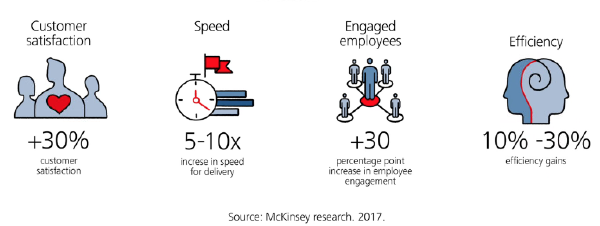
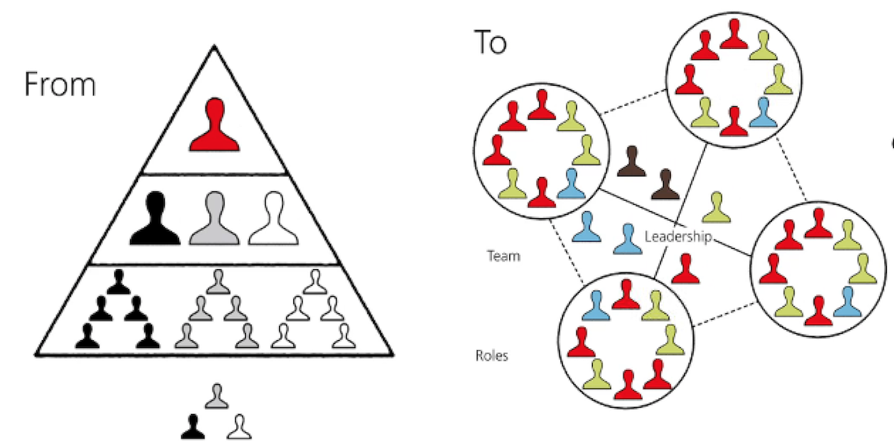
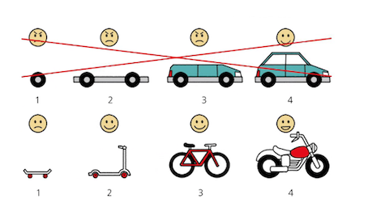
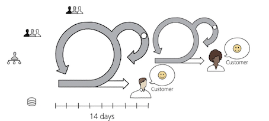
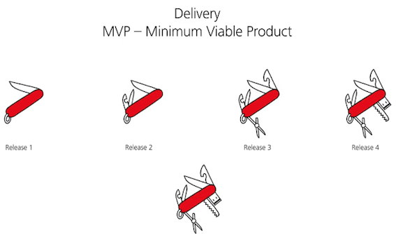
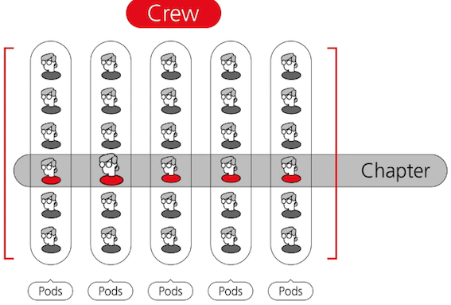

1 Agile Intro

- Removing friction and dependencies
- Creating small, self-managing teams that work autonomously, with clear ownership and common objectives
- Delivering incremental business value earlier and often

Creating small, self-managing teams that work autonomously, with clear ownership and common goals

Iteration

Each iteration is a time-cycle of two weeks, during which product backlog items are delivered by the pod.
Iterations are run consecutively with no gap between them.
We need to create an environment where we can safely learn from our smart failures to improve our products, processes and people.
Rather than chasing a long list of individual milestones and KPIs, agile pods follow common goals and measurable outcomes, using Objectives and Key Results, or OKRs.
To improve delivery, agile aims to create a "Minimum Viable Product" MVP

The first workable version is shared with the client, to enable capture of unique feedback and insights.
These insights give a higher level of predictability,so that changes can be flexibly implemented and problems can be solved before their impact is too big.
1 From hierarchy…..to enablement
We need managers to move from being masterminds and micromanagers to being servant leaders - that means leaders that clearly communicate the vision while coaching, supporting and empowering the team to self-manage so that they can achieve this vision.
2 From measuring tasks and output..to outcome and impact
- We need to move away from focusing solely on tasks, to outcome and impact;
- solving customer problems and changing behavior, which will, in turn, have a positive impact on UBS.
3 From silos….to cooperation
Rather than only optimizing your own small teams and "me" thinking, we would liketo collaborate more and think holistically on how we can benefit the whole organization.
4 From dispersed accountability..to team accountability
We want pods to own problems end-to-end and solve them, not push the problem somewhere else.
Crews (POD + POD + POD + POD)

Agile also means making quick decisions, learning fast, being client-centric and continuously improving. It's about trusting and enabling teams and making them accountable.
Key Takeaways
-
Centralized to do list
- Organize work in one repository which the whole team can access.
-
Worker in iterations
- A key feature of agile is the adaptive approach where refining the design over time is more effective
- Prioritize work and use time boxes.
-
Colaborate across function
- Drop the barriers between silos resulting in efficiency. Remember teams are more effective than individuals.
-
Transparency is key
Make the work visible:
- increasing collaboration andtransparency.
-
If it is important, write it down and share across stakeholders.
-
Feedback
Looks for early feedback, inspect & adapt (retrospective meeting), learn from your mistakes
- Learn fast nd fail fast
Learn from our past, front load the risk, and discover potential barriers early.
- Run effective & efficient meetings
Have a clear meeting agenda and follow up actions. Reduce big committee sessions.
- Communicate
Avoid unnecessary hand-offs communicate directly, eliminate the middle-men